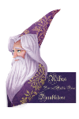

" Você está cego pelo amor ao seu departamento, Cornélio! Você deu muita importância, e sempre dará, na chamada pureza do sangue! Você falhou em reconhecer que não importa como uma pessoa nasceu, mas como ela irá ser no futuro! "
Cornélio Oswald Fudge (25 de maio de 1915)O.M. (Primeira Classe), foi o Ministro da Magia de 1990 a 1996. Ele teve o completo controle do Ministério da Magia, o principal corpo do governo bruxo britânico da mundo. Fudge começou sua carreira no Ministério como Minístro Junior do Departamento de Acidentes e Catástrofes Mágicas. Ele sucedeu Millicent Bagnold como Minístro da Magia, e teve como responsabilidade o encontro com o Primeiro Ministro Trouxa quando necessário.

No início de sua gestão como ministro, Fudge foi humilde e consultava Dumbledore antes de tomar alguma decisão, mandando corujas ao diretor toda manhã. Mas após quatorze anos, ele se torna mais confiante e não acredita nos avisos de Dumbledore e Harry de que Voldemort havia retornado.
Cornélio possui certos preconceitos quanto bruxos mestiços e com criaturas como meio-gigantes. É velho e careca, além de possuir o aspecto de estabanado. É um bruxo sangue-puro.